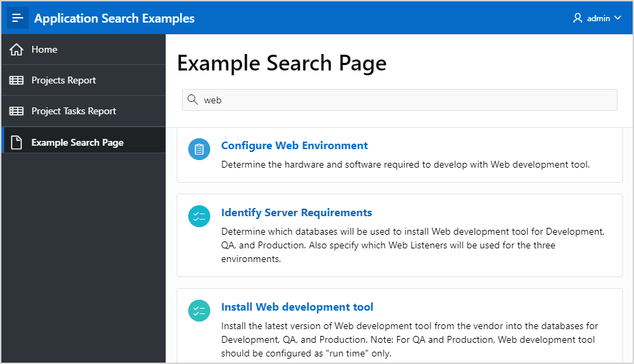
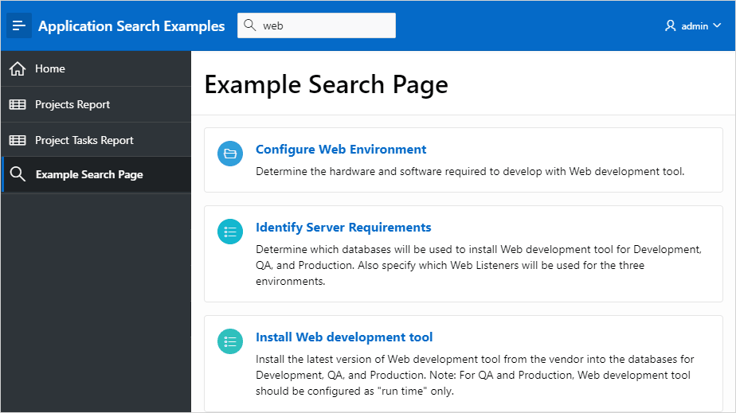

16.9.1 Example Searches
View search examples.
The following example shows a sample search page created with
the Create Page Wizard. Notice a search field displays after the page title and is
followed by a Search Results region. In Page Designer, the search field is
positioned in the Breadcrumb region and the Search Results region displays in the
Body Position. This example has two search configurations that map to two separate
tables, EBA_PROJECTS and
EBA_PROJECT_TASKS.

Description of the illustration search_page_example.png
The next example is the same page but with the search field is in a different position. Notice that the search field displays in the Position, After Logo, which is between the logo and the navigation bar. As in the previous example, the Search Results region displays in the Body of the page. However, the icons are different.

Description of the illustration search_page_example2.png
You can also create a search components by adding them manually to
a page in Page Designer. The following example shows a search page named Project
Overview. Note that the search field displays after the page title and contains the
search term, web. The page includes two search result regions:
Projects Completed and Tasks and
Comments which use the Standard Template so the region Title
appears.
See Also:
Creating a Search Page ManuallyParent topic: Adding Search to an Application